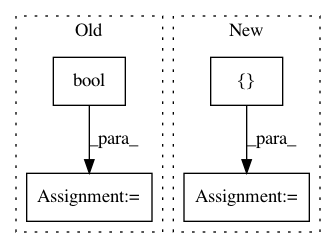

1f0750670cf8ea24ad264debf9603002ab0fb565,test/nn/pool/test_mem_pool.py,,test_mem_pool,#,5
Before Change
mpool = MemPool(heads=3, num_keys=2, in_channels=2, out_channels=3)
assert mpool.__repr__() == "MemPool(2, 3, heads=3, num_keys=2)"
x = torch.rand((5, 4, 2))
mask = torch.Tensor([[1, 1, 1, 0], [1, 1, 1, 1], [1, 1, 1, 1],
[1, 1, 1, 1], [1, 1, 1, 0]]).bool()
x, S = mpool(x, mask)
loss, P = MemPool.kl_loss(S, mask)
assert x.shape == torch.Size([5, 2, 3])
assert (S[~mask] == 0).all()
assert P.shape == S.shape
assert (P[~mask] == 0).all()
After Change
assert mpool.__repr__() == "MemPooling(4, 8, heads=3, num_clusters=2)"
x = torch.randn(17, 4)
batch = torch.tensor([0, 0, 0, 1, 1, 1, 1, 2, 2, 2, 2, 3, 3, 3, 4, 4, 4])
_, mask = to_dense_batch(batch, batch)
out, S = mpool(x, batch)
loss = MemPooling.kl_loss(S)
In pattern: SUPERPATTERN
Frequency: 3
Non-data size: 4
Instances
Project Name: rusty1s/pytorch_geometric
Commit Name: 1f0750670cf8ea24ad264debf9603002ab0fb565
Time: 2021-03-15
Author: matthias.fey@tu-dortmund.de
File Name: test/nn/pool/test_mem_pool.py
Class Name:
Method Name: test_mem_pool
Project Name: etal/cnvkit
Commit Name: ce063f5f903eb551c9216fde4a1b11a3cc7dab86
Time: 2016-12-06
Author: eric.talevich@gmail.com
File Name: cnvlib/commands.py
Class Name:
Method Name: do_targets
Project Name: brian-team/brian2
Commit Name: 9c81949fc7d48bd0b495d0b26e260a59dda14ec7
Time: 2015-06-18
Author: marcel.stimberg@inserm.fr
File Name: brian2/monitors/spikemonitor.py
Class Name: SpikeMonitor
Method Name: __init__